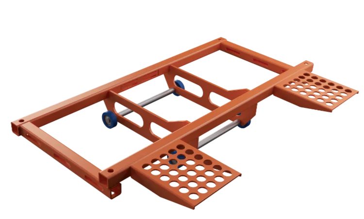

The Power Tilt feature of our ramps lets you use a standard cordless drill to load even the heaviest of bikes, with a ramp weighing only 65 kg and designed with a safety margin of 5:1 in static load. The 6061 T6 aluminium alloy is one of the most corrosion resistant hardened aluminium alloys, and yet it is anodized as well, which further enhances its corrosion resistance. All steel components are zinc plated, and then powder coated.
| AUN 1000 | AUN 2000 | |
|---|---|---|
| Technical drawings | identical dimensions to AUN 2000 except in length. |  |
| Length | 2100mm | 2500mm |
| Width | 630mm | 630mm |
| Weight | approx .65kg | approx .75kg |
| Max load | 550kg | 550kg |
| Max loading height | 700 mm* | 90 mm* |
| Price (exc. VAT) Delivered Uk / Ireland |
£ 1850 | £ 1950 |
* With the 75 cm extension attached to the AUN 1000 ramp, the max loading height increases to 1100 mm.
** With the 75 cm extension attached to the AUN 2000 ramp, the max loading height increases to 1500 mm.
A range of accessories to expand the usability of our ramp system. 3 or 4-wheel scooter adapters, extensions for longer bikes or to increase the loading height, no-drilling attachment, sliding loading platform and more.
3-wheel scooter adapter
25cm-extension
75cm-extension
No-drilling-attachment